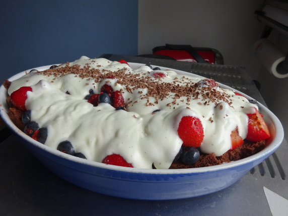

Süße Beeren-Lasagne

Zutaten
- 750 g gemischte Beeren
- 1 EL Honig
- 2 EL Zimt
- 50 g Butter
- 4 Eier (Größe M, Zimmertemperatur)
- 150 g Zucker
- 100 g Mehl
- 20 g Kakao
- etwas Zucker für das Handtuch
- 200 g Schlagsahne
- 200 g Sahnequark
- 1 Vanilleschote
- weiße Kuvertüre zum Garnieren
Zubereitung
- Beeren putzen, eventuell klein schneiden, mit dem Honig und Zimt in einer Schüssel mischen, etwas ziehen lassen.
- Ein Backblech von ca. 35 x 40 cm mit Backpapier auslegen. Die Butter in einem kleinen Topf zerlassen.
- Die Eier und 100 g Zucker mit dem Handrührgerät 10 Minuten auf höchster Stufe cremig schlagen. Die abgekühlte, flüssige Butter unterrühren. Das Mehl mit dem Kakao mischen, auf die Eiermasse sieben und behutsam unterheben. Den Teig gleichmäßig auf
das vorbereitete Blech streichen.
- Im vorgeheizten Ofen bei 220° Celsius (Umluft 180° Celsius) 8 - 9 Minuten auf der zweiten Einschubleiste von unten backen. Ein Küchenhandtuch auf der Arbeitsfläche mit Zucker bestreuen. Den Biskuitboden mit dem Papier vom Blech ziehen und umgedreht
auf das Handtuch legen. Das Papier gleichmäßig mit etwas Wasser beträufeln und nach 2 Minuten vorsichtig abziehen. Biskuit auskühlen lassen und quer halbieren.
- Sahne mit dem restlichen Zucker steif schlagen. Mit dem Quark und dem ausgekratzten Mark der Vanilleschote vermengen.
- Eine Hälfte des Biskuitbodens in eine Auflaufform von 25 x 20 cm geben und etwas andrücken. Die Früchte auf dem Boden verteilen, die Quarkcreme darüber geben und glatt streichen. Die zweite Biskuithälfte auflegen und ebenfalls etwas andrücken.
- Eine Stunde kalt stellen. Die weiße Kuvertüre wie Parmesan über den Biskuit hobeln.